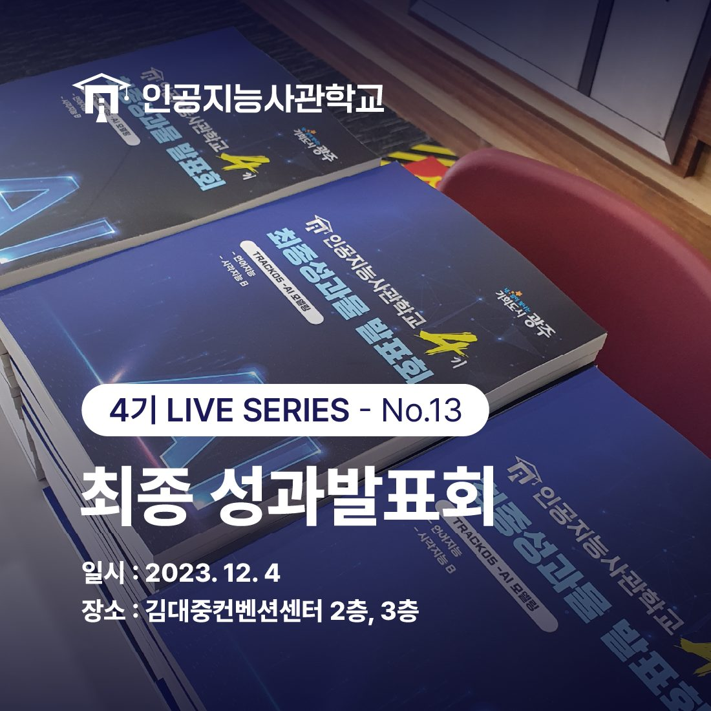
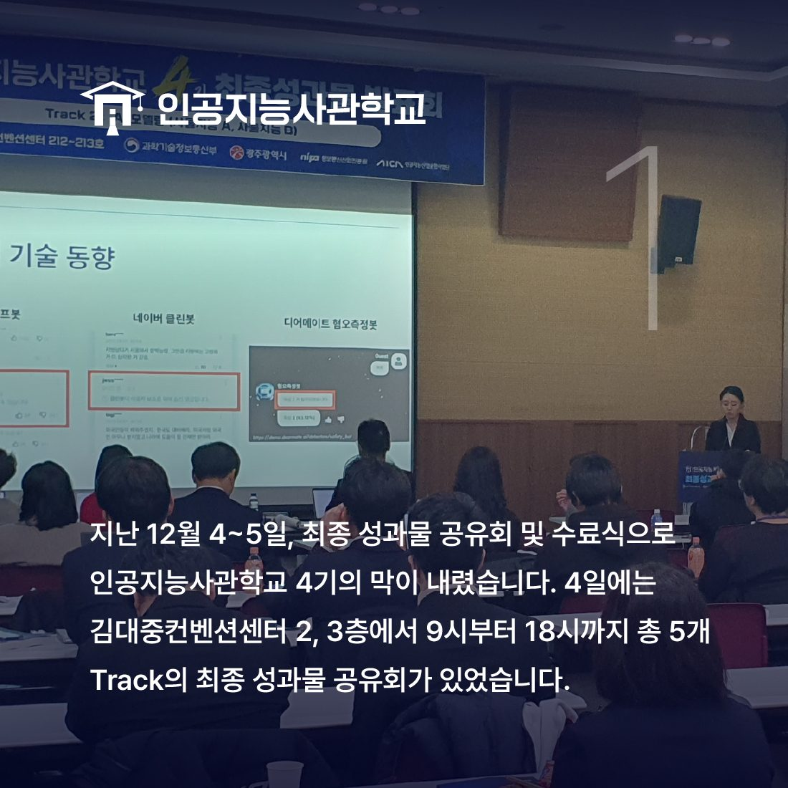
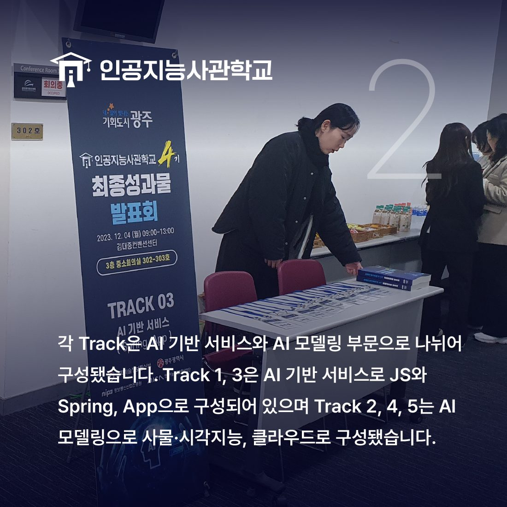
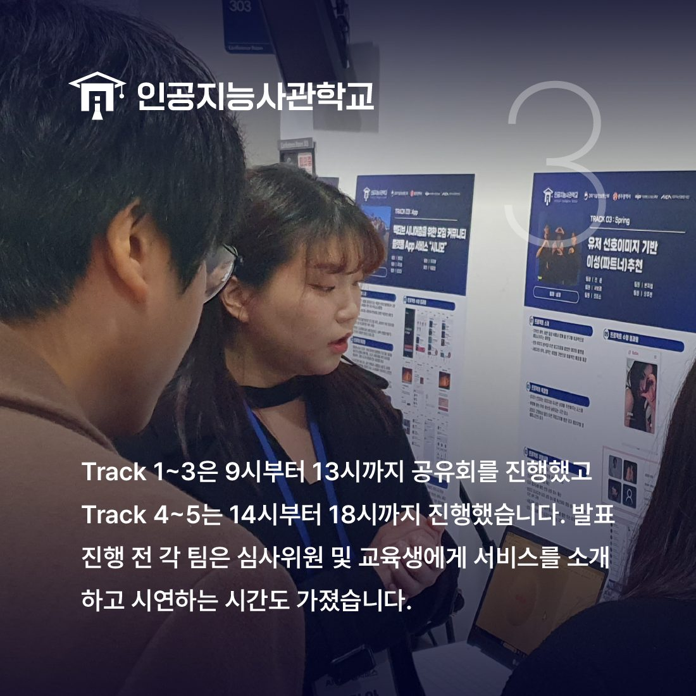
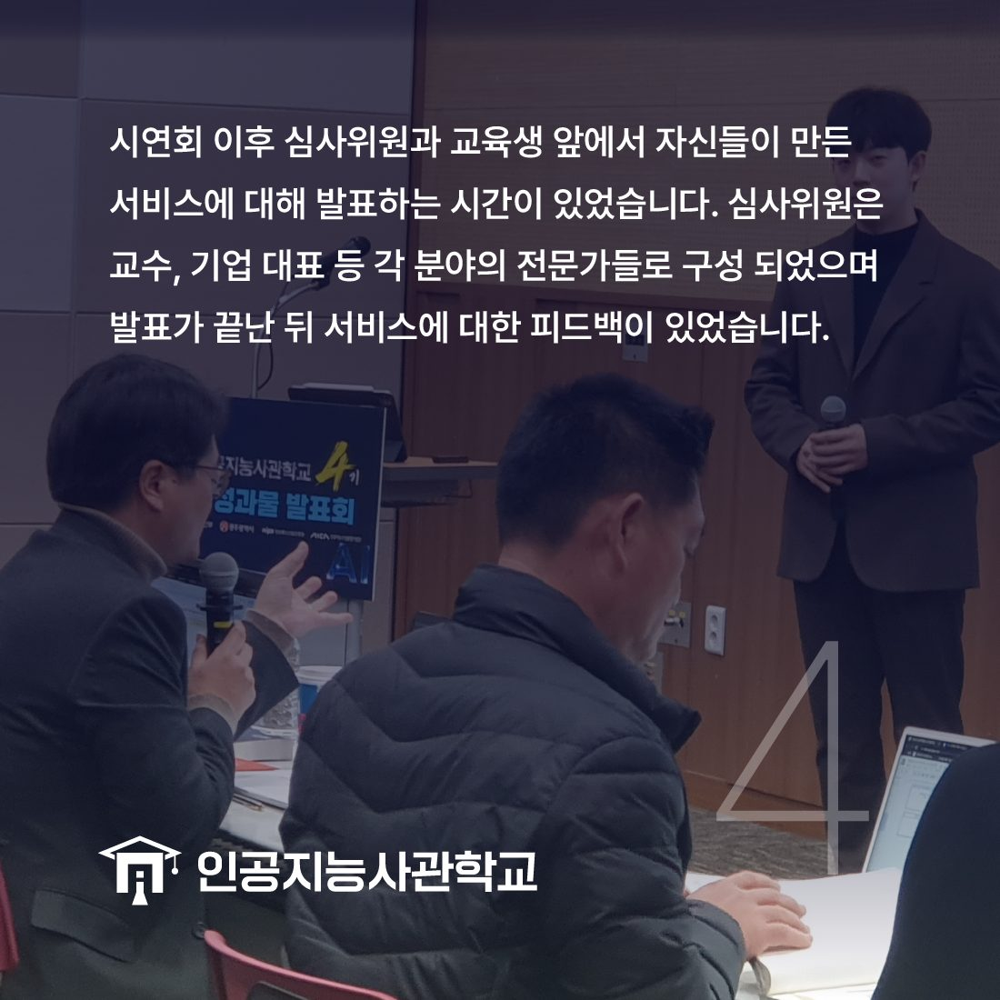
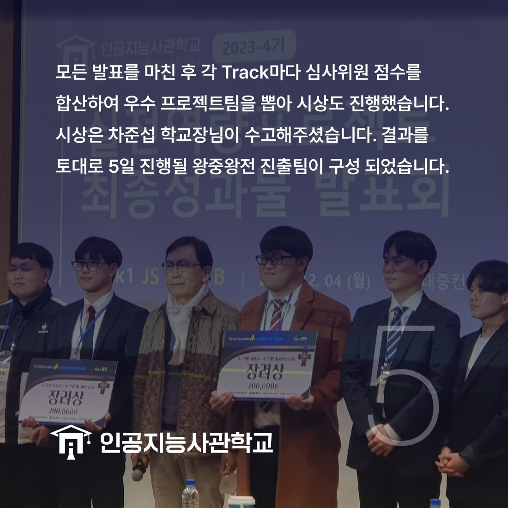
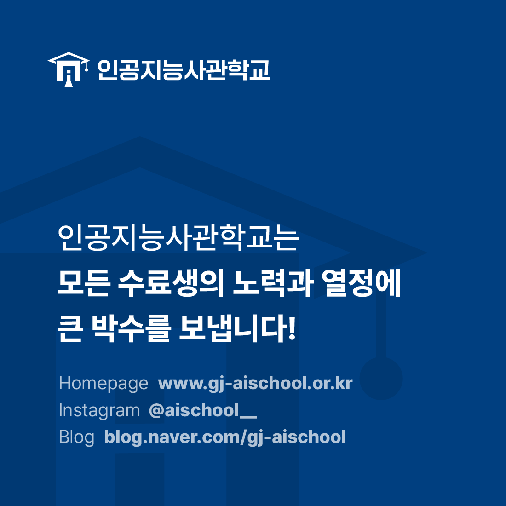

안녕하세요! 인공지능사관학교입니다. 😆

지난 12월 4일~5일에는 김대중컨벤션센터에서
인공지능사관학교 4기의 최종 성과발표회 및 수료식이 있었는데요.
4일에 있었던 최종 성과발표회에 대해
이야기해보고자 합니다!😊

최종 성과물 공유회는 4일 9시부터 18시까지
김대중컨벤션센터 2, 3층 컨퍼런스 홀 등에서 진행됐습니다.
총 5개 트랙으로 오전에는 1~3트랙
오후에는 4~5트랙이 발표를 진행했고
각 트랙은 10개 팀으로 구성되었습니다!👍

각 트랙은 아래와 같습니다.
▷Track1 - (AI기반 서비스) JS A, B
▷Track2 - (AI 모델링) 사물지능A, B
▷Track3 - (AI기반 서비스) Spring, App
▷Track4 - (AI 모델링) 클라우드, 시각지능A
▷Track5 - (AI 모델링) 언어지능, 시각지능B

각 팀은 심사위원 및 교육생에게 서비스를 시연하는 시간도 가졌습니다.
교육생들은 폼보드와 시연 영상 등을 보여주며
프로젝트의 서비스 구성 등에 대해 설명했습니다.
심사위원들께서도 큰 관심을 보이며 이야기를 경청해 주셨습니다!💡

이후 발표회가 진행됐습니다.
발표회에서는 약10분간 발표를 진행하고
심사위원과의 질의응답 시간을 가졌습니다.

모든 발표가 끝난 뒤 심사위원 점수를 합산하여
우수 프로젝트 팀을 선정했습니다.
수상결과를 토대로 5일 진행될 왕중왕전 진출팀이 가려졌습니다.

5일에는 왕중왕전 및 수료식과 취업박람회가 진행됐는데요.
자세한 내용은 바로 다음 게시글로 이어집니다!👉👉